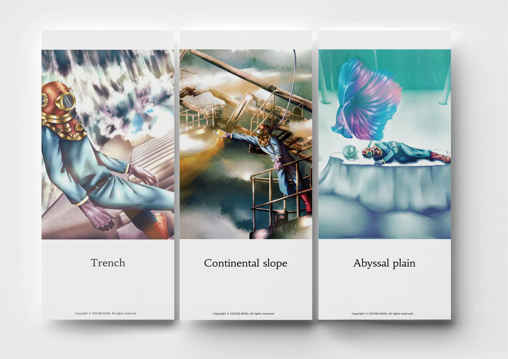
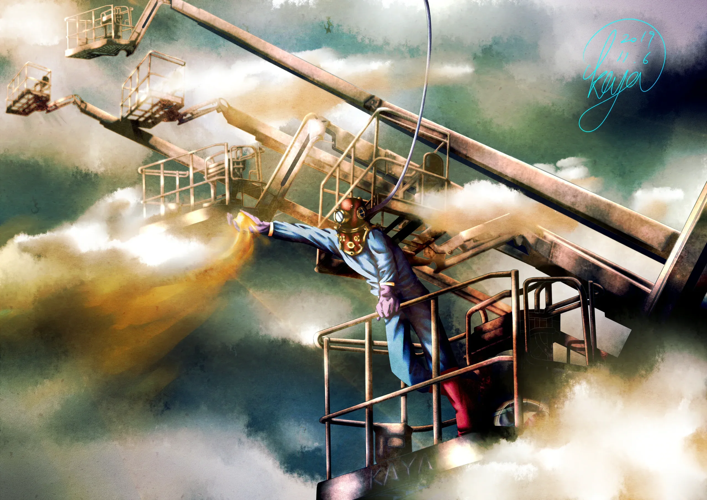
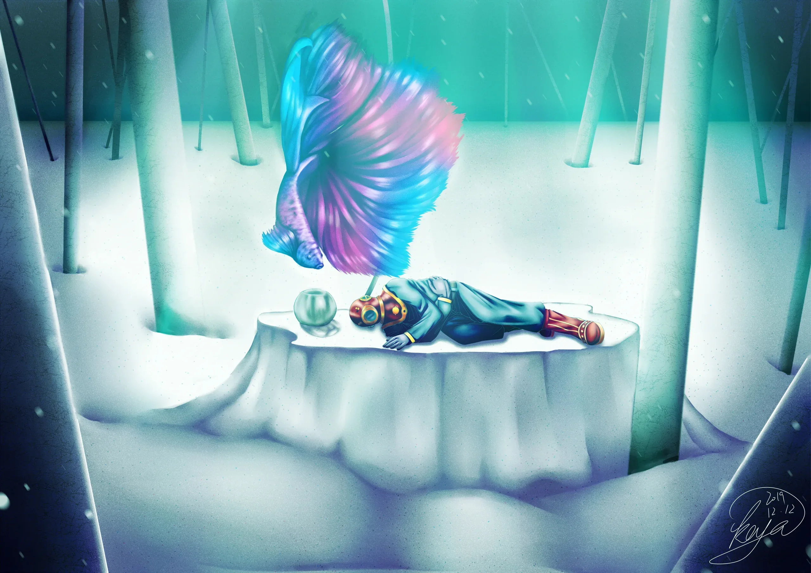
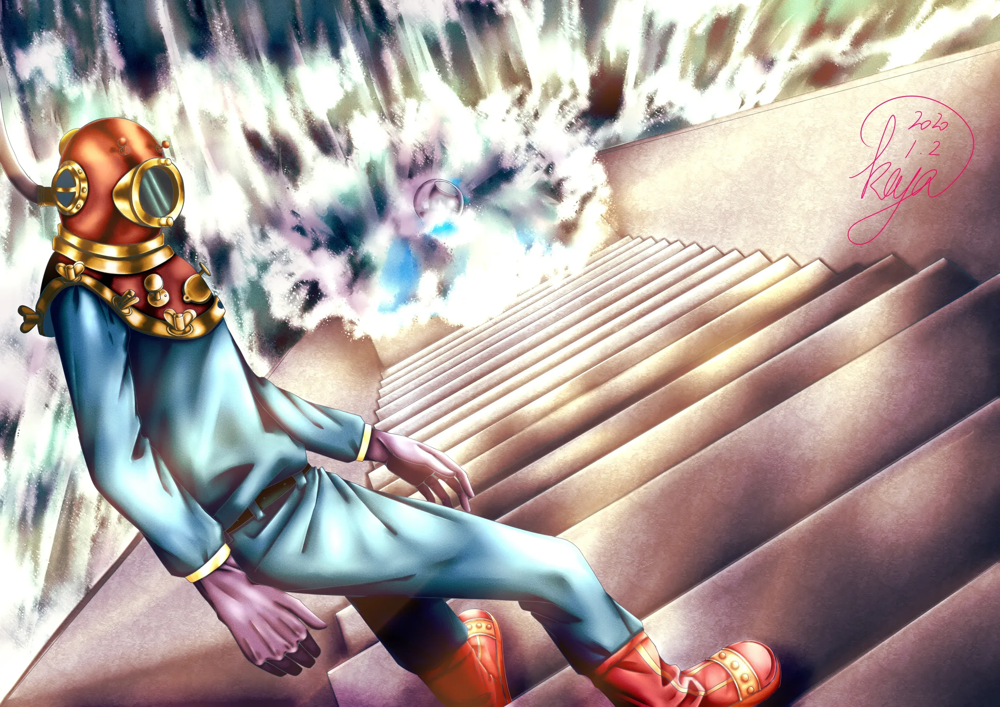

PLEASANTDREAMS
好夢好夢（よい夢）
插畫｜角色設計｜2019イラスト｜キャラクターデザイン｜2019
Design Concept｜設計概念Design Concept｜デザインコンセプト
- CATEGORY
- ILLUSTRATION / VISUAL DESIGN
- SIZE
- 420 x 297 350dpi
- CREDIT
- KAYA
系列以大陸坡、深海平原與海溝為章節，描繪夢境清掃者穿梭意識之海、送別逝去夢境的奇幻世界。
大陸斜面・深海平原・海溝の3章で、意識の海を巡り消えていく夢を見送る「夢の掃除屋」の世界を描きました。
以靜謐深海與洶湧海潮，描繪記憶沉澱、思緒碰撞並逐漸碎裂的過程。
静かな深海と荒れ狂う海流を通して、記憶が積もり、思いがぶつかりながら砕けていく様子を描きました。
夢境清掃者在意識海洋中吞食夢境，讓珍藏與遺忘的記憶最終化作塵埃、歸於虛無。
意識の海で夢を飲み込む営みを描き、忘れられた記憶も大切な記憶も、やがて塵となり虚無へ還る姿を表現しました。